File: 000870.gt.txt (if the image is defective, simply delete all Arabic text and the line will be excluded)
وقـربنـي وأدنـانــي إليــه وقال : انعم بعيش في جواري(1)
File: 000871.gt.txt (if the image is defective, simply delete all Arabic text and the line will be excluded)
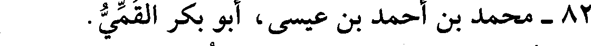
82 - محمد بن أحمد بن عيسى، أبو بكر القمي.
File: 000872.gt.txt (if the image is defective, simply delete all Arabic text and the line will be excluded)
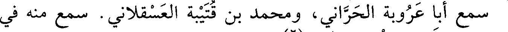
سمع أبا عروبة الحراني، ومحمد بن قتيبة العسقلاني. سمع منه في
File: 000873.gt.txt (if the image is defective, simply delete all Arabic text and the line will be excluded)
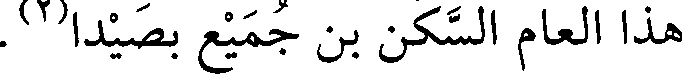
هذا العام السكن بن جميع بصيدا(2) .
File: 000874.gt.txt (if the image is defective, simply delete all Arabic text and the line will be excluded)
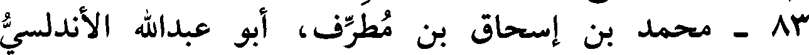
83 - محمد بن إسحاق بن مطرف، أبو عبدالله الأندلسي
File: 000875.gt.txt (if the image is defective, simply delete all Arabic text and the line will be excluded)
الإستجي.
File: 000876.gt.txt (if the image is defective, simply delete all Arabic text and the line will be excluded)
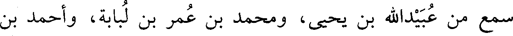
سمع من عبيدالله بن يحيى، ومحمد بن عمر بن لبابة، وأحمد بن
File: 000877.gt.txt (if the image is defective, simply delete all Arabic text and the line will be excluded)
وكان شاعرا عالما باللغة والعربية؛ روى عنه إسماعيل، وغيره.
File: 000878.gt.txt (if the image is defective, simply delete all Arabic text and the line will be excluded)
مات في شوال(3) .
File: 000879.gt.txt (if the image is defective, simply delete all Arabic text and the line will be excluded)
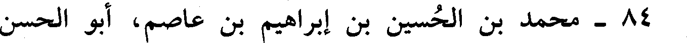
84 - محمد بن الحسين بن إبراهيم بن عاصم، أبو الحسن
File: 000880.gt.txt (if the image is defective, simply delete all Arabic text and the line will be excluded)
الآبري ثم السجستاني.
File: 000881.gt.txt (if the image is defective, simply delete all Arabic text and the line will be excluded)
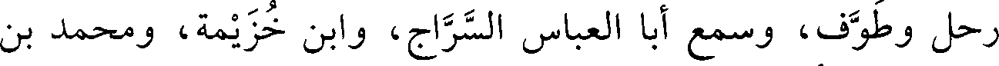
رحل وطوف، وسمع أبا العباس السراج، وابن خزيمة، ومحمد بن
File: 000882.gt.txt (if the image is defective, simply delete all Arabic text and the line will be excluded)
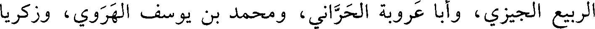
الربيع الجيزي، وأبا عروبة الحراني، ومحمد بن يوسف الهروي، وزكريا
File: 000883.gt.txt (if the image is defective, simply delete all Arabic text and the line will be excluded)
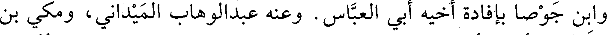
وابن جوصا بإفادة أخيه أبي العباس. وعنه عبد الوهاب الميداني، ومكي بن
File: 000884.gt.txt (if the image is defective, simply delete all Arabic text and the line will be excluded)
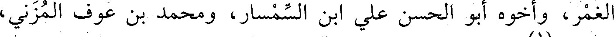
الغمر، وأخوه أبو الحسن علي ابن السمسار، ومحمد بن عوف المزني،
File: 000885.gt.txt (if the image is defective, simply delete all Arabic text and the line will be excluded)
وغيرهم(1).
File: 000886.gt.txt (if the image is defective, simply delete all Arabic text and the line will be excluded)
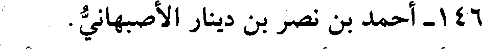
146 - أحمد بن نصر بن دينار الأصبهاني.
File: 000887.gt.txt (if the image is defective, simply delete all Arabic text and the line will be excluded)
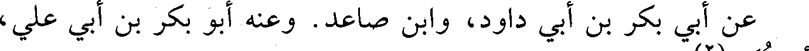
عن أبي بكر بن أبي داود، وابن صاعد. وعنه أبو بكر بن أبي علي،
File: 000888.gt.txt (if the image is defective, simply delete all Arabic text and the line will be excluded)
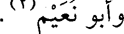
وأبو نعيم(2).
File: 000889.gt.txt (if the image is defective, simply delete all Arabic text and the line will be excluded)
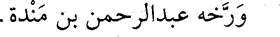
ورخه عبدالرحمن بن مندة.
File: 000890.gt.txt (if the image is defective, simply delete all Arabic text and the line will be excluded)
147 - أحمد بن نصر بن عبدالله بن الفتح، أبو بكر البغدادي
File: 000891.gt.txt (if the image is defective, simply delete all Arabic text and the line will be excluded)
الذارع.
File: 000892.gt.txt (if the image is defective, simply delete all Arabic text and the line will be excluded)
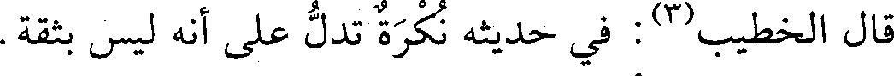
قال الخطيب(3) : في حديثه نكرة تدل على أنه ليس بثقة.
File: 000893.gt.txt (if the image is defective, simply delete all Arabic text and the line will be excluded)
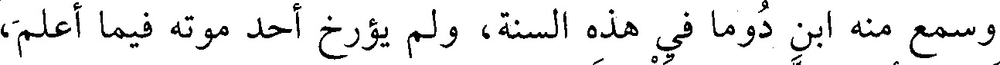
وسمع منه ابن دوما في هذه السنة، ولم يؤرخ أحد موته فيما أعلم،
File: 000894.gt.txt (if the image is defective, simply delete all Arabic text and the line will be excluded)
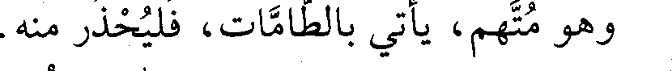
وهو متهم، يأتي بالطامات، فليحذر منه.
File: 000895.gt.txt (if the image is defective, simply delete all Arabic text and the line will be excluded)
148 - إبراهيم بن عبدالله بن عبيد البغدادي الثلاج.
File: 000896.gt.txt (if the image is defective, simply delete all Arabic text and the line will be excluded)
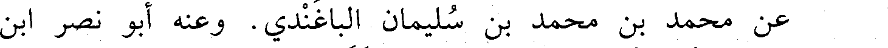
عن محمد بن محمد بن سليمان الباغندي. وعنه أبو نصر ابن
File: 000897.gt.txt (if the image is defective, simply delete all Arabic text and the line will be excluded)
الجبان، وابن أخيه أبو القاسم عبدالله ابن الثلاج.
File: 000898.gt.txt (if the image is defective, simply delete all Arabic text and the line will be excluded)
149 - إسماعيل بن نجيد بن أحمد بن يوسف بن خالد، أبو عمرو
File: 000899.gt.txt (if the image is defective, simply delete all Arabic text and the line will be excluded)
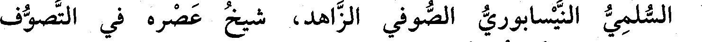
السلمي النيسابوري الصوفي الزاهد، شيخ عصره في التصوف
To Save: `Ctrl+s`, make sure to choose `Webpage, complete`!